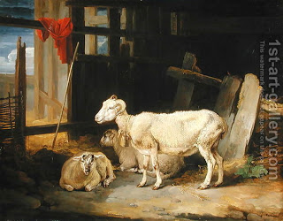

Menachot 46 - The Loaves and the Lambs on Shavuot
We learned a disagreement about what happens when either loaves or lambs are not available. However, all agree that once they are connected, they become indispensable to each other, and if either loaves or lambs are lost, the other cannot be brought. What constitutes the "connection?" Surely the slaughter of the lambs does, but what about waving them together, which happens before the slaughter?
Maybe the answer can be deduced from the following law of a thanksgiving offering. If one of the forty breads of the thanksgiving offering broke and it happened before the slaughter of the animal, the owner brings another whole loaf instead. However, if a loaf broke after slaughter, they continue as if it were a peace offering, which does not require bread altogether, but the bread may not be eaten, and the owner has not discharged his obligation. How can they do it?!? If slaughter creates attachment, they cannot proceed with the sacrifice! This would answer our question above that waving, not slaughter, creates an attachment!
No! No proof can be brought from a thanksgiving offering, since it is called a peace offering from the outset.
Art: James Ward - Heath Ewe And Lambs